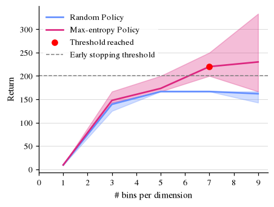

Workflow: Abstraction Refinement¶
We want to compute an optimal policy for a continuous environment using a model checker.
For that we use verigym’s discretization and abstraction learning features.
We discretize the original environment (
CartPoleenvironment)Learn abstract model (discrete MDP)
Compute optimal policy using
stormpyEvaluate the computed policy on the original environment
If the performance is not yet sufficient, refine the abstraction parameters (discretization parameters) and restart.
We start by importing necessary building blocks used in this workflow: abstraction mappers, exploration policies, the stormpy MDP builder and the abstraction_refinement loop itself.
import os
import random
from typing import Any
import gymnasium as gym
import numpy as np
import stormpy
from tqdm.notebook import tqdm
import verigym
from verigym.abstraction.abstractionmapper import linspace_mapper, AbstractionMapper
from verigym.policy.randomized import RandomizedPolicy
from verigym.policy.qvalue import EntropyLearningPolicy
from verigym.frameworks.stormpy.stormpy_utils import build_stormpy_mdp
from verigym.abstraction.abstraction_refinement import abstraction_refinement
from verigym.policy.utils import evaluate_policy
from workflow_utils import OUTPATH
import plot_style
SUBPATH = "refinement_files"
PLOT_PATH = f"{OUTPATH}/figures/{SUBPATH}"
os.makedirs(PLOT_PATH, exist_ok=True)
To make the experiments reproducible, we define a small helper that seeds Python, NumPy and the environment (including its observation and action spaces).
def set_seeds(seed, original_env: verigym.VeriGymEnv):
"""Set the seeds."""
random.seed(seed)
np.random.seed(seed)
original_env.reset(seed=seed)
original_env.action_space.seed(seed)
original_env.observation_space.seed(seed)
We need to provide the abstraction refinement loop with a callback that decides if we should stop refining.
For that we first define a function that copmutes a policy for an abstracted environment.
Given a learned abstract model, we convert it to a stormpy MDP and let the model checker compute a scheduler that maximizes the discounted cumulative reward. We wrap this scheduler into two StormpyPolicy objects:
one that maps original observations to abstract states via the abstraction map (to run on the original environment), and
one using an identity mapper (to run on the abstracted model).
def optimal_policy_via_model_checking(env: verigym.AbstractedExplicitEnv, discount_factor=0.95):
"""We compute the optimal policy using the model checker `stormpy`."""
stormpy_mdp = build_stormpy_mdp(env)
prop = stormpy.parse_properties(f"Rmax=?[Cdiscount={discount_factor}]")[
0
] # checking for cumulative discounted reward
# Run the model checking:
result = stormpy.check_model_sparse(stormpy_mdp, prop, extract_scheduler=True)
scheduler = result.scheduler
# policy that can be execured on original model
policy_on_original = verigym.StormpyPolicy(scheduler, env.abstraction_map, stormpy_mdp)
# policy that can be execute on the abstracted model
identity_mapper = verigym.AbstractionMapper.initialize_identity_mapper(env.observation_space, env.action_space)
policy_on_abstracted = verigym.StormpyPolicy(
policy=scheduler,
abstraction_mapper=identity_mapper,
mdp=stormpy_mdp
)
return policy_on_original, policy_on_abstracted
The refinement loop calls a metric callback after each abstraction step to decide whether to stop. Here, it
computes the optimal policy via model checking,
evaluates it on the original environment, and
reports the task as complete once the mean return reaches
THRESHOLD.
Note: We want to illustrate what it looks like when continue the abstraction refinement until the end. For the early stopping to take place, set THRESHOLD=300.
def metric_callback(original_env: verigym.VeriGymEnv, abstract_env: verigym.AbstractedExplicitEnv) -> tuple[bool, Any]:
"""
After an abstraction, takes the results and checks whether the result is good enough wrt to the metric of interest. Here, performance on original environment.
"""
EVAL_STEPS = 1000
THRESHOLD = 600 # set to 300 for early stopping to actually take place
DISCOUNT_FACTOR = 0.95
policy_on_original, policy_on_abstracted = optimal_policy_via_model_checking(abstract_env, DISCOUNT_FACTOR)
mean, std = evaluate_policy(original_env, policy_on_original, EVAL_STEPS)
metric_result = mean, std
task_complete = mean >= THRESHOLD
return task_complete, metric_result
Now we run the experiment on CartPole-v1, refining the abstraction by increasing the number of bins per state dimension in mapper_schedule (set QUICK = False for the full run). We compare two exploration techniques across several seeds:
a random policy, whose dataset is collected once in the original space and reused for every mapper, and
a max-entropy policy, which is rebuilt for each mapper and alternates exploration and learning over
ENTROPY_ITERATIONSrounds.
QUICK = False
N_BINS = range(1,10,2) if not QUICK else range(1,5)
NUM_STEPS = int(1e6) if not QUICK else int(1e4)
EVAL_STEPS = int(1e4)
ENTROPY_ITERATIONS = 5 # interleaved exploration/learning rounds for the entropy policy (same total NUM_STEPS budget)
env = gym.make("CartPole-v1")
# tightening the obs space a bit more according to the CartPole's description
env.observation_space = gym.spaces.Box(low=np.array([-2.5,-0.5,-0.2,-0.5]), high=np.array([2.5,0.5,0.2,0.5]))
original_env = verigym.GenerativeEnv.from_gymnasium(env)
mapper_schedule = [linspace_mapper(env, n_bin, 2) for n_bin in N_BINS]
def entropy_policy_initializer(mapper):
"""Max-entropy exploration policy over the abstract states of `mapper`, acting on the original env."""
policy = EntropyLearningPolicy(
original_env,
mapper
)
policy.abstraction_mapper = mapper # map original observations to abstract states (and actions back)
return policy
# Exploration techniques to compare, each with the kwargs passed to `abstraction_refinement`
EXPLORATION = {
"Random Policy": dict(make_exploration_policy=lambda mapper: RandomizedPolicy(original_env), n_iterations=1, reuse_dataset=True),
"Max-entropy Policy": dict(make_exploration_policy=entropy_policy_initializer, n_iterations=ENTROPY_ITERATIONS, reuse_dataset=False),
}
SEEDS = range(1000,1005)
all_results = {name: [] for name in EXPLORATION} # per exploration technique: one `results` list per seed
for name, kwargs in EXPLORATION.items():
for i, seed in tqdm(enumerate(SEEDS), desc=f"Experiment ({name})", total=len(SEEDS)):
print(f"\n########## {name} | SEED {seed} {i}/{len(SEEDS)} ##########")
set_seeds(seed, original_env)
all_results[name].append(abstraction_refinement(original_env, mapper_schedule, NUM_STEPS, metric_callback, seed=seed, **kwargs)) # policy_results, abstracted_model, policy_on_original
# Per technique, per-seed policy results: shape (n_seeds, n_iterations, 2) -> (mean, std)
all_policy_results = {name: [[x[0] for x in res] for res in results] for name, results in all_results.items()}
# Print results aggregated over seeds (mean of per-seed means, std across seeds)
print("\n====== RESULTS ======")
for name, policy_results in all_policy_results.items():
print(f"--- {name} ---")
n_iters = min(len(r) for r in policy_results)
seed_means = np.array([[r[i][0] for i in range(n_iters)] for r in policy_results])
for i in range(n_iters):
print(f"Iteration {i}:\tN_BINS={N_BINS[i]}\t-> {seed_means[:, i].mean():.2f} ± {seed_means[:, i].std():.2f} (over {len(SEEDS)} seeds)")
/home/maris/tacas/VeriGym/.venv/lib/python3.12/site-packages/gymnasium/spaces/box.py:297: UserWarning: WARN: Box low's precision lowered by casting to float32, current low.dtype=float64
gym.logger.warn(
/home/maris/tacas/VeriGym/.venv/lib/python3.12/site-packages/gymnasium/spaces/box.py:364: UserWarning: WARN: Box high's precision lowered by casting to float32, current high.dtype=float64
gym.logger.warn(
########## Random Policy | SEED 1000 0/5 ##########
====== Iteration 0/5 ======
Did not succeed in satisfying the threshold performance with the given parameters.
====== Iteration 1/5 ======
Did not succeed in satisfying the threshold performance with the given parameters.
====== Iteration 2/5 ======
Did not succeed in satisfying the threshold performance with the given parameters.
====== Iteration 3/5 ======
Did not succeed in satisfying the threshold performance with the given parameters.
====== Iteration 4/5 ======
Did not succeed in satisfying the threshold performance with the given parameters.
########## Random Policy | SEED 1001 1/5 ##########
====== Iteration 0/5 ======
Did not succeed in satisfying the threshold performance with the given parameters.
====== Iteration 1/5 ======
Did not succeed in satisfying the threshold performance with the given parameters.
====== Iteration 2/5 ======
Did not succeed in satisfying the threshold performance with the given parameters.
====== Iteration 3/5 ======
Did not succeed in satisfying the threshold performance with the given parameters.
====== Iteration 4/5 ======
Did not succeed in satisfying the threshold performance with the given parameters.
########## Random Policy | SEED 1002 2/5 ##########
====== Iteration 0/5 ======
Did not succeed in satisfying the threshold performance with the given parameters.
====== Iteration 1/5 ======
Did not succeed in satisfying the threshold performance with the given parameters.
====== Iteration 2/5 ======
Did not succeed in satisfying the threshold performance with the given parameters.
====== Iteration 3/5 ======
Did not succeed in satisfying the threshold performance with the given parameters.
====== Iteration 4/5 ======
Did not succeed in satisfying the threshold performance with the given parameters.
########## Random Policy | SEED 1003 3/5 ##########
====== Iteration 0/5 ======
Did not succeed in satisfying the threshold performance with the given parameters.
====== Iteration 1/5 ======
Did not succeed in satisfying the threshold performance with the given parameters.
====== Iteration 2/5 ======
Did not succeed in satisfying the threshold performance with the given parameters.
====== Iteration 3/5 ======
Did not succeed in satisfying the threshold performance with the given parameters.
====== Iteration 4/5 ======
Did not succeed in satisfying the threshold performance with the given parameters.
########## Random Policy | SEED 1004 4/5 ##########
====== Iteration 0/5 ======
Did not succeed in satisfying the threshold performance with the given parameters.
====== Iteration 1/5 ======
Did not succeed in satisfying the threshold performance with the given parameters.
====== Iteration 2/5 ======
Did not succeed in satisfying the threshold performance with the given parameters.
====== Iteration 3/5 ======
Did not succeed in satisfying the threshold performance with the given parameters.
====== Iteration 4/5 ======
Did not succeed in satisfying the threshold performance with the given parameters.
########## Max-entropy Policy | SEED 1000 0/5 ##########
====== Iteration 0/5 ======
Did not succeed in satisfying the threshold performance with the given parameters.
====== Iteration 1/5 ======
Did not succeed in satisfying the threshold performance with the given parameters.
====== Iteration 2/5 ======
Did not succeed in satisfying the threshold performance with the given parameters.
====== Iteration 3/5 ======
Did not succeed in satisfying the threshold performance with the given parameters.
====== Iteration 4/5 ======
Did not succeed in satisfying the threshold performance with the given parameters.
########## Max-entropy Policy | SEED 1001 1/5 ##########
====== Iteration 0/5 ======
Did not succeed in satisfying the threshold performance with the given parameters.
====== Iteration 1/5 ======
Did not succeed in satisfying the threshold performance with the given parameters.
====== Iteration 2/5 ======
Did not succeed in satisfying the threshold performance with the given parameters.
====== Iteration 3/5 ======
Did not succeed in satisfying the threshold performance with the given parameters.
====== Iteration 4/5 ======
Did not succeed in satisfying the threshold performance with the given parameters.
########## Max-entropy Policy | SEED 1002 2/5 ##########
====== Iteration 0/5 ======
Did not succeed in satisfying the threshold performance with the given parameters.
====== Iteration 1/5 ======
Did not succeed in satisfying the threshold performance with the given parameters.
====== Iteration 2/5 ======
Did not succeed in satisfying the threshold performance with the given parameters.
====== Iteration 3/5 ======
Did not succeed in satisfying the threshold performance with the given parameters.
====== Iteration 4/5 ======
Did not succeed in satisfying the threshold performance with the given parameters.
########## Max-entropy Policy | SEED 1003 3/5 ##########
====== Iteration 0/5 ======
Did not succeed in satisfying the threshold performance with the given parameters.
====== Iteration 1/5 ======
Did not succeed in satisfying the threshold performance with the given parameters.
====== Iteration 2/5 ======
Did not succeed in satisfying the threshold performance with the given parameters.
====== Iteration 3/5 ======
Did not succeed in satisfying the threshold performance with the given parameters.
====== Iteration 4/5 ======
Did not succeed in satisfying the threshold performance with the given parameters.
########## Max-entropy Policy | SEED 1004 4/5 ##########
====== Iteration 0/5 ======
Did not succeed in satisfying the threshold performance with the given parameters.
====== Iteration 1/5 ======
Did not succeed in satisfying the threshold performance with the given parameters.
====== Iteration 2/5 ======
Did not succeed in satisfying the threshold performance with the given parameters.
====== Iteration 3/5 ======
Did not succeed in satisfying the threshold performance with the given parameters.
====== Iteration 4/5 ======
Did not succeed in satisfying the threshold performance with the given parameters.
====== RESULTS ======
--- Random Policy ---
Iteration 0: N_BINS=1 -> 9.28 ± 0.10 (over 5 seeds)
Iteration 1: N_BINS=3 -> 139.29 ± 7.14 (over 5 seeds)
Iteration 2: N_BINS=5 -> 166.67 ± 0.00 (over 5 seeds)
Iteration 3: N_BINS=7 -> 166.67 ± 0.00 (over 5 seeds)
Iteration 4: N_BINS=9 -> 161.90 ± 9.52 (over 5 seeds)
--- Max-entropy Policy ---
Iteration 0: N_BINS=1 -> 9.33 ± 0.03 (over 5 seeds)
Iteration 1: N_BINS=3 -> 147.62 ± 9.52 (over 5 seeds)
Iteration 2: N_BINS=5 -> 173.33 ± 13.33 (over 5 seeds)
Iteration 3: N_BINS=7 -> 220.00 ± 24.49 (over 5 seeds)
Iteration 4: N_BINS=9 -> 230.00 ± 58.12 (over 5 seeds)
Finally, we plot the mean return on the original environment against the number of bins per dimension, with the shaded area showing the min/max range across seeds. A red marker indicates the first refinement step at which an exploration technique would have reached the (illustrative) early stopping threshold.
import matplotlib.pyplot as plt
THRESHOLD = 200 # early stopping threshold on the mean return (not used during refinement)
fig, ax = plt.subplots(figsize=(4, 3))
threshold_labeled = False # label the threshold marker only once in the legend
for j, (name, policy_results) in enumerate(all_policy_results.items()):
# Per-seed mean returns, shape (n_seeds, n_iterations)
n_iters = min(len(r) for r in policy_results)
seed_means = np.array([[r[i][0] for i in range(n_iters)] for r in policy_results])
means = seed_means.mean(axis=0)
mins = seed_means.min(axis=0)
maxs = seed_means.max(axis=0)
bins = N_BINS[:n_iters]
# Mean return with min/max range across seeds
color = f"C{j}"
ax.plot(bins, means, color=color, label=name)
ax.fill_between(bins, mins, maxs, color=color, alpha=0.3)
# First refinement step where the mean return reaches the threshold (None if never)
above = np.flatnonzero(means >= THRESHOLD)
if above.size > 0:
first = above[0]
ax.scatter(bins[first], means[first], color="red", zorder=3, label=None if threshold_labeled else "Threshold reached")
threshold_labeled = True
# Early stopping threshold
ax.axhline(THRESHOLD, color="gray", linestyle="--", linewidth=1, label="Early stopping threshold")
ax.set(xlabel="# bins per dimension", ylabel="Return")
ax.set_xticks(range(0, max(N_BINS) + 1))
ax.set_xticks(range(0, max(N_BINS) + 1), minor=True)
ax.legend(frameon=True, facecolor="white", edgecolor="none", framealpha=0.8)
fig.savefig(f"{PLOT_PATH}/workflow_abstraction_refinement_cartpole.pdf", pad_inches=0, bbox_inches="tight")
